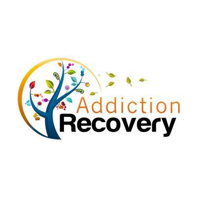

Alcoholics Anonymous is a 12 step abstinence-baced recovery meeting which focuses on recovery for alcoholism. It is a self-improvement program which results in a spirital awakening. Doctor Bob and Bill W were the founders of AA in 1935.
Narcotics Anonymous was founded in 1953 and is a nonprofit fellowship or society of men and women for whom drugs have become a major problem. It is also based on a 12 step program.
Celebrate Recovery is a Christian based 12 step recovery program that is also a nonprofit fellowship for men and women of all hurts, hang-ups, and habits. Celebrate Recovery was founded in 1991 by John Baker.
Al-Anon is a 12 step recovery program for family and friends of an Alcoholic/Addict. Al-Anon was founded in 1951 by Lois W (Bill W's wife, AA co founder) and Anne B.

How to contact us
2127 Ridgelawn Ave
Bethlehem PA, 18020
Phone Number - +1 (555) 555-5555